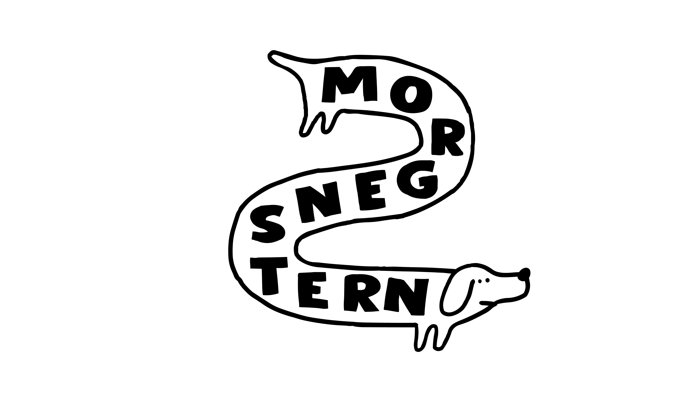

Et felles språk
for god reklame.
Bygget på fire bøker mange referer til men færre har lest ferdig.
0 av 13 dager fullført
Dette er et krasjkurs for deg som lager, kjøper eller vurderer reklame. Her samler vi prinsippene fra Les Binet og Peter Field, Byron Sharp, Rory Sutherland og Robert Cialdini til ett felles rammeverk — slik at Morgenstjerner, kunder og byråer kan diskutere reklame med samme språk.
Hvert kapittel tar mindre enn 30 minutter: kort lesning, litt diskusjon og noen raske quiz-spørsmål. Du får også noen enkle sjekklister du kan bruke for å vurdere ideene dine opp mot prinsippene.
Du trenger ikke å ha lest bøkene på forhånd (men jeg anbefaler å lese både Sutherland og Cialdini). Målet er at du om to uker har et tydelig rammeverk du kan bruke til å argumentere for gode ideer!

Kursets 13 dager
- 02Merkebygging og aktivering30 min
- 0360/40-regelen30 min
- 04Emosjonell og rasjonell kommunikasjon30 min
- 05Mental tilgjengelighet30 min
- 06Fysisk tilgjengelighet og distinkte merkemarkører30 min
- 07Penetrasjon over lojalitet30 min
- 08Hvorfor mennesker ikke er rasjonelle30 min
- 09Signalering og kostbare signaler30 min
- 10Alkemi i praksis30 min
- 11Cialdinis seks prinsipper30 min
- 12Pre-suasion og bruken av Cialdini i reklame30 min
Om kurset
Kurset er utviklet av Anders Muurman Holm, kreativ leder i Morgenstern. Materialet bygger på Les Binet og Peter Fields The Long and the Short of It, Byron Sharps How Brands Grow, Rory Sutherlands Alchemy, og Robert Cialdinis Influence.
Kurset er gratis og åpent. Progresjon lagres lokalt i nettleseren din, slik at du kan ta det i ditt eget tempo uten å opprette en konto.